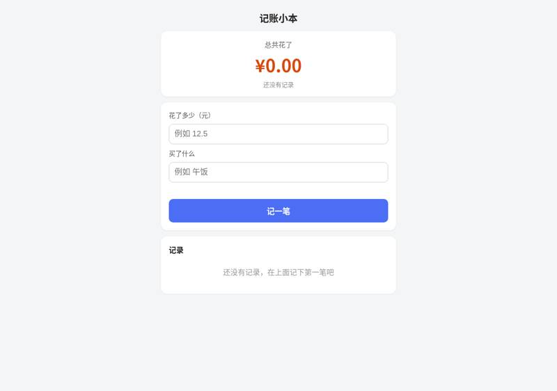
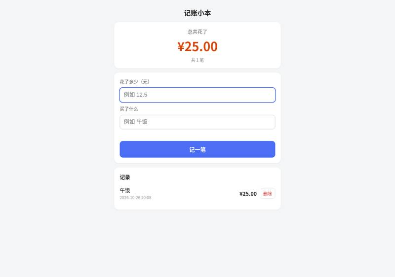
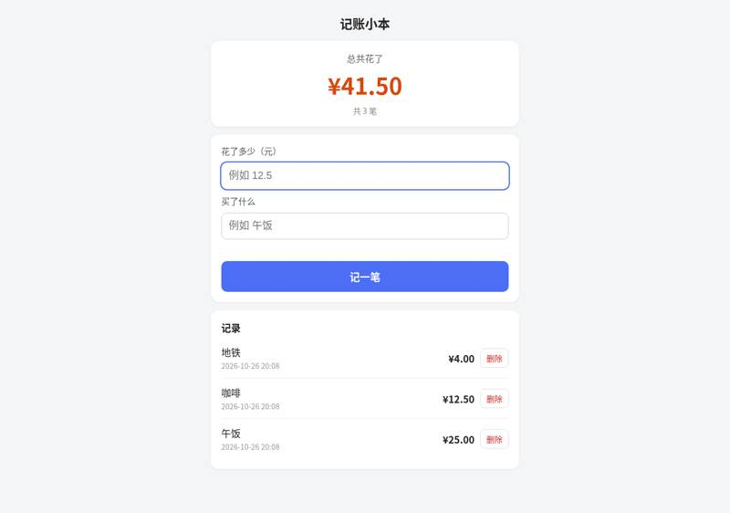
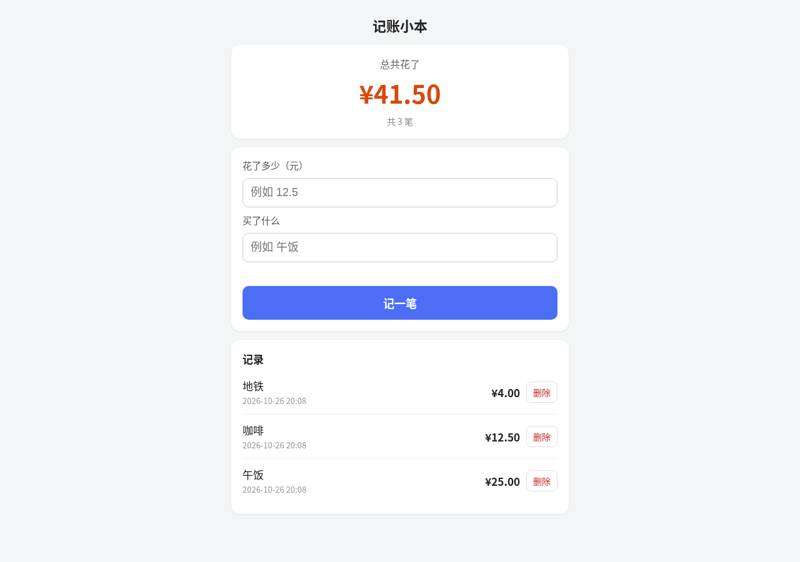
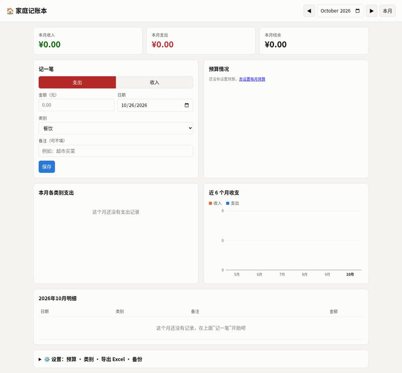
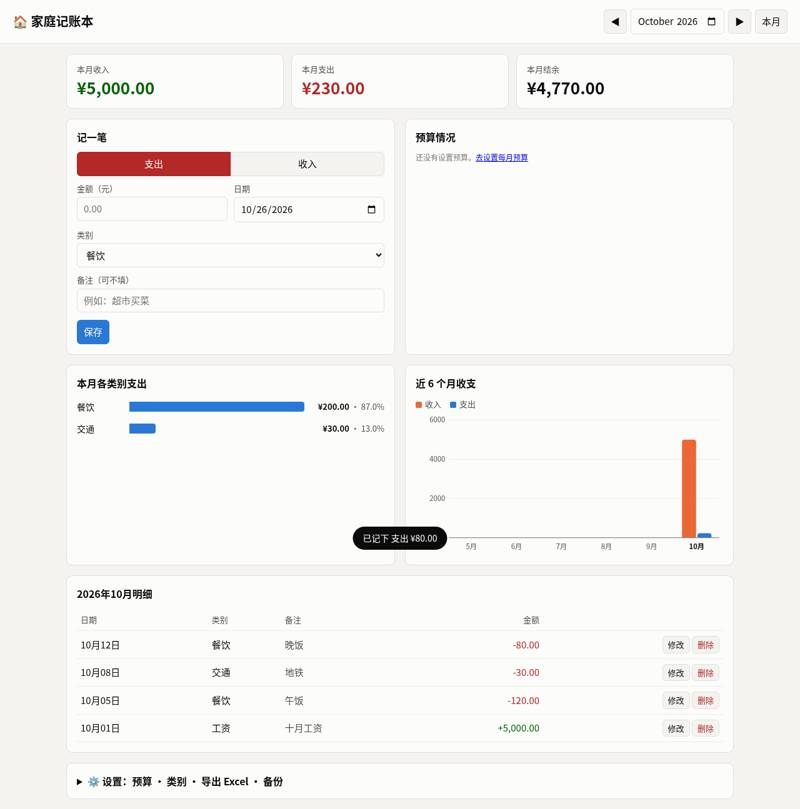
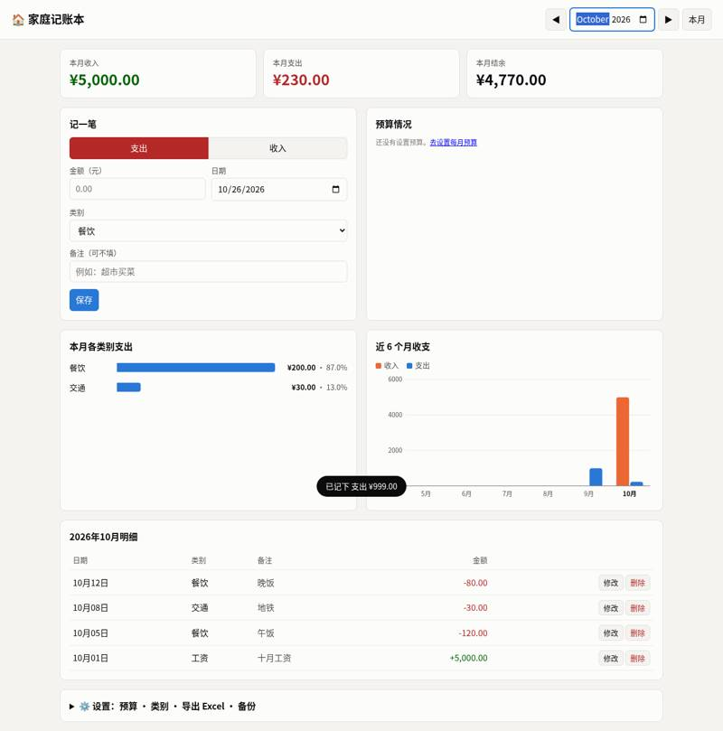
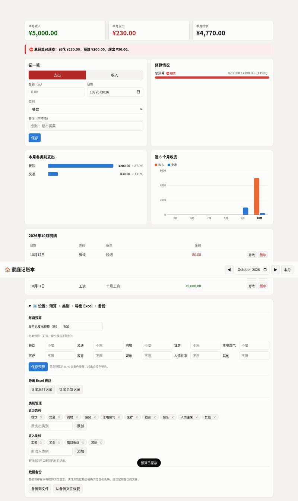
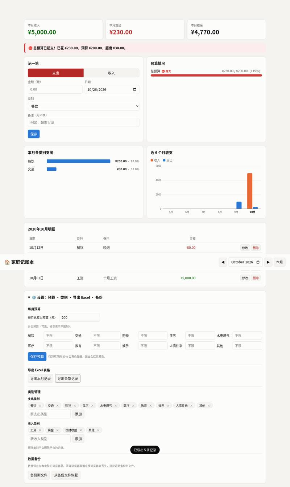
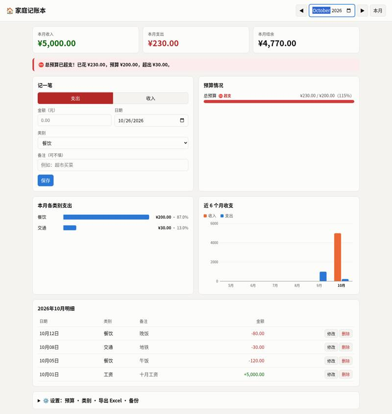

SuperClaude-Org/SuperClaude_Framework: vibe coding test
Installed from its README in a throwaway sandbox, then used by Claude Code (Claude Opus 5.5) to build two apps from requests written the way someone who cannot code would write them. Whenever the build stopped to ask a question or for approval, it got the same reply. A separate tester session, with no tool loaded, opened each app in a browser and ran the checks; we went through every screenshot. All results · The task · The tester's checks
Install: SETUP: done SuperClaude Framework v4.3.0 (30 /sc:* commands + 20 agents in ~/.claude) via `pip install --user --break-system-packages pipx && pipx install ~/src && superclaude install` (verified with `superclaude install --list` and `superclaude doctor`) (repo commit fe68862c8ed9)
One sentence: an expense page
The request, word for word: 帮我做一个记账小网页：每次花钱记一笔（花了多少、买了什么），页面上能看到一共花了多少，关掉浏览器再打开，记录还在。
Ran: all 4 checks passed. Opens: double-click. Built in 2.4 minutes (limit 30); it stopped to ask 1 time(s); how it ended: finished. Usage at API prices: $0.73 (4.3 times the run with no tool). Packages: none (plain HTML, CSS and JavaScript).
| Check | Verdict | What the tester saw | Screenshot |
|---|---|---|---|
| opens | pass | file:// page shows: 记账小本 | 总共花了 | ¥0.00 | 还没有记录 | 花了多少（元） | 买了什么 | | 记一笔 | 记录 | 还没有记录，在上面记下第一笔吧 |  |
| records an expense | pass | 记账小本 | 总共花了 | ¥25.00 | 共 1 笔 | 花了多少（元） | 买了什么 | | 记一笔 | 记录 | 午饭 | 2026-10-26 20:08 | ¥25.00 | 删除 |  |
| total is right | pass | total shown: ¥41.50; page: 记账小本 | 总共花了 | ¥41.50 | 共 3 笔 | 花了多少（元） | 买了什么 | | 记一笔 | 记录 | 地铁 | 2026-10-26 20:08 | ¥4.00 | 删除 | 咖啡 | 2026-10-26 20:08 | ¥12.50 | 删除 | 午饭 | 2026-10-26 20:08 | ¥25.00 | 删除 |  |
| still there after closing and reopening | pass | total after reopen: ¥41.50; page: 记账小本 | 总共花了 | ¥41.50 | 共 3 笔 | 花了多少（元） | 买了什么 | | 记一笔 | 记录 | 地铁 | 2026-10-26 20:08 | ¥4.00 | 删除 | 咖啡 | 2026-10-26 20:08 | ¥12.50 | 删除 | 午饭 | 2026-10-26 20:08 | ¥25.00 | 删除 |  |


Where it stopped, and got the reply 「我不懂这些，你按你推荐的来，继续做。」
SuperClaude is installed and healthy. It doesn't need an extra paid key or account; its add-on servers are optional. I've started step 1 of its "New Feature" workflow, `/sc:brainstorm`. This step works out what you want by asking you questions before any design or code, so I need your answers first: **`/sc:brainstorm` 需求确认问题** 我已经明白的： - 每次花钱记一笔：**金额** + **买了什么** - 页面上显示**总共花了多少** - 关掉浏览器再打开，**记录还在**（保存在这台电脑的浏览器里） - 你双击一个文件就能打开它 还有几个问题想请你确认： 1. **记错了怎么办？** 需要能**删除**某一笔吗？还是不用？ 2. **日期**：每笔要不要自动记下是哪天花的，显示在列表里？ 3. **货币**：金额按**人民币（¥）**显示可以吗？ 4. **总数范围**：只看"从开始到现在一共花了多少"就够了吗？还是也想看"这个月花了多少"？ 5. **界面语言**：网页上的文字用**中文**可以吗？ 6. **使用设备**：主要在**电脑**上用，还是也想在**手机**浏览器里用？（注意：记录只保存在你打开它的那个浏览器里，电脑和手机之间不会同步。这样可以吗？） 你可以直接回答，比如"1 要删除，2 要，3 可以，4 只要总数，5 中文，6 电脑"。
One paragraph: a family ledger
The request, word for word: 做一个家庭记账本网页：能记收入和支出（金额、类别、日期、备注），能按月看收入、支出和结余，能看每个类别花了多少（最好有图），可以设每月预算、超了要提醒，还能把记录导出成 Excel 表格。数据存在我电脑上就行。
Ran: all 8 checks passed. Opens: double-click. Built in 5.2 minutes (limit 45); it stopped to ask 1 time(s); how it ended: finished. Usage at API prices: $1.38 (1.3 times the run with no tool). Packages: none (plain HTML, CSS and JavaScript).
| Check | Verdict | What the tester saw | Screenshot |
|---|---|---|---|
| opens | pass | file:// page shows title 家庭记账本, 记一笔 form, summary cards |  |
| records income and expenses | pass | October table rows: 10月12日 | 餐饮 | 晚饭 | -80.00 | 修改 删除 ; 10月08日 | 交通 | 地铁 | -30.00 | 修改 删除 ; 10月05日 | 餐饮 | 午饭 | -120.00 | 修改 删除 ; 10月01日 | 工资 | 十月工资 | +5,000.00 | 修改 删除 |  |
| month's income, spending and balance | pass | Oct 2026 收入 5,000.00 支出 230.00 结余 4,770.00 |  |
| spending by category | pass | 本月各类别支出 section: 本月各类别支出 / 餐饮 / ¥200.00 · 87.0% / 交通 / ¥30.00 · 13.0% |  |
| switches between months | pass | Sept 2026: 收入 0.00 支出 999.00 结余 -999.00 (shown as -¥999.00; see shots/5-by-month-sep.png), rows ['09月15日 | 购物 | 衣服 | -999.00 | 修改 删除']; back to Oct: 收入 5,000.00 支出 230.00 结余 4,770.00 |  |
| warns over budget | pass | Set 每月总支出预算 200 in ⚙️ 设置 and clicked 保存预算 (toast 预算已保存; no dialog). A red banner appeared on top: '⛔ 总预算已超支！已花 ¥230.00，预算 ¥200.00，超出 ¥30.00。' and 预算情况 shows '总预算 ⛔ 超支 ¥230.00 / ¥200.00（115%）' with a red bar. |  |
| exports a spreadsheet | pass | Downloaded 家庭记账本_全部记录_2026-10-26.xlsx (.xlsx); contents: 日期 | 类型 | 类别 | 金额（元） | 备注 / 2026-09-15 | 支出 | 购物 | 999.0 | 衣服 / 2026-10-01 | 收入 | 工资 | 5000.0 | 十月工资 / 2026-10-05 | 支出 | 餐饮 | 120.0 | 午饭 / 2026-10-08 | 支出 | 交通 | 30.0 | 地铁 / 2026-10-12 | 支出 | 餐饮 | 80.0 | 晚饭 / | | | | / 合计收入 | | | 5000.0 | / 合计支出 | | | 1229.0 | / 结余 | | | 3771.0 | |  |
| still there after closing and reopening | pass | After restart Oct: 收入 5,000.00 支出 230.00 结余 4,770.00; Oct rows ['10月12日 | 餐饮 | 晚饭 | -80.00 | 修改 删除', '10月08日 | 交通 | 地铁 | -30.00 | 修改 删除', '10月05日 | 餐饮 | 午饭 | -120.00 | 修改 删除', '10月01日 | 工资 | 十月工资 | +5,000.00 | 修改 删除']; Sept rows ['09月15日 | 购物 | 衣服 | -999.00 | 修改 删除'] |  |


Where it stopped, and got the reply 「我不懂这些，你按你推荐的来，继续做。」
SuperClaude 的第一步是 `/sc:brainstorm`（需求梳理），它会先问你几个问题，再开始设计和写代码。下面是我需要你确认的几点，每一条都附了建议的默认做法。你可以只回复"都按默认"，也可以只改其中几条。 **1. 类别** 默认先给一套常用类别，你也可以自己增加或删除： - 支出：餐饮、交通、购物、住房、水电燃气、医疗、教育、娱乐、人情往来、其他 - 收入：工资、奖金、理财收益、其他 这样可以吗？ **2. 预算** 是只设一个每月总预算，还是每个类别也能单独设（比如餐饮每月 2000）？提醒方面，默认在花到 80% 时先给黄色提醒，超出后给红色警告。 **3. 家庭成员** 要不要记录每一笔是谁花的（比如爸爸、妈妈、孩子），并能按人查看？默认是不分人。 **4. 数据保存方式** 默认做法是双击 `index.html` 就能在浏览器里用，不用联网，也不用装任何东西。数据保存在这台电脑的浏览器里。不过如果清理了浏览器数据，或者换了浏览器，记录就会丢失。所以我会再加一个"备份到文件 / 从文件恢复"的按钮。这样可以吗？ **5. 导出 Excel** 默认可以选导出某一个月，或者导出全部记录。导出的文件是 `.xlsx` 格式，包含日期、类型、类别、金额、备注这几列。 **6. 其他** - 货币只用人民币（¥），可以吗？ - 记错的记录可以修改和删除。 - 你主要在电脑上用，还是也会用手机打开？ 请回复你的选择，我收到后进入下一步：设计和实现。